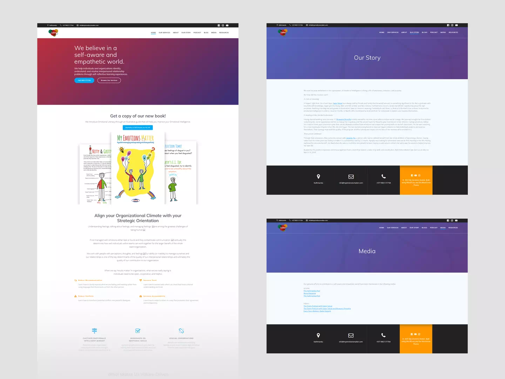

Valued, but hard to explain

Clients understood the value. The website couldn’t explain it.
My Emotions Matter teaches emotional intelligence through workshops, courses and consulting. It was shifting towards more business work and needed a more professional site to build trust. The challenge wasn’t the quality of the work. It was saying clearly what they do and how.